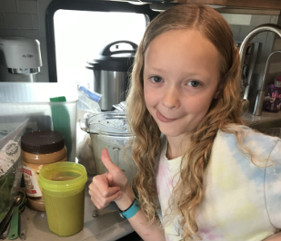

Back to homepage
Table of Contents: Breakfast
Sourdough Pancakes
- 2 c sourdough discard
- 2 eggs
- 4 T melted butter*
- 2 T honey
- 1/2 t salt
- 1 t baking soda
- Blueberries or chocolate chips for cooking into the pancakes
(optional)
- Fresh fruit for serving (optional)
1. Mix everything but the baking soda and blueberries/chocolate chips
together
2. Stir in the baking soda
3. Pour 1/4 cup at a time onto greased griddle or pan on low, and put
the blueberries/chocolate chips (if using) in asap
4. Cook until satisfactory color (the first side is done when the
face-up side has bubbles)
Sourdough Crepes
- 8 eggs
- 1 c sourdough discard
- 3 T melted butter*
- 1/4 t salt
- 3/4 c milk**
- Fresh fruit for serving (optional)
1. Mix discard, eggs, milk, and salt together
2. Add melted butter and mix until smooth
3. Pour about half a cup of batter into greased pan or griddle on low
and use spatula to spread batter out into a thin pancake
4. Allow to cook until almost completely cooked through, and then flip
(this will help them not to break)
5. Cook for one to two more minutes before taking it off the pan/griddle
Pancakes
- 2 c all-purpose flour
- 1/4 c granulated sugar
- 4 t (1 T & 1 t) baking powder
- 1/4 t baking soda
- 1/2 t salt
- 1 3/4 c milk*
- 4 T melted butter**
- 2 t vanilla extract
- 1 egg
- Blueberries or chocolate chips for cooking into the pancakes
(optional)
- Fresh fruit for serving (optional)
1. Mix everything together
2. Pour ~1/4 cup at a time onto greased griddle or pan on low, and put
the blueberries/chocolate chips (if using) in asap
3. Cook until satisfactory color (the first side is done when the
face-up side has bubbles)
Chocolate Peanut Butter Banana Smoothie

- 1 frozen banana, sliced into halves or thirds for easy blending
- 1 T cacao powder or unsweetened cocoa powder
- 2 T peanut butter
- 1 t vanilla extract
- 1/2 c milk of choice or 1/4 c milk of choice and 1/4 c plain yogurt**
(best with unsweetened almond milk, in my opinion)
- Preferred amount of spinach (optional -- I usually use a handful)
1. Blend until smooth and drink right away for best results (you can put
it in the fridge for a while if you don't want to drink it immediately,
but it won't stay good like that for long)
(Tip: if your blender has measurements on the sides, put the milk in
first so you won't have to use a measuring cup)